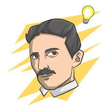

Este é meu primeiro documento html. Meu nome é Victor Hugo e sou iniciante nessa área. Então vamos lá.
Estou aqui para contar histórias. Então vamos aprender hoje sobre o famoso Nikola Tesla, você conhece? Nikola Tesla foi um importante cientista sérvio-croata que realizou descobertas muito importante na área da eletricidade. Seu trabalho foi fundamental para melhorar a transmissão de energia elétrica, por exemplo. Disputou a famosa guerra das correntes com Thomas Edison e a venceu. Morreu empobrecido após seus investimentos fracassarem.
Nikola Tesla foi um dos maiores cientistas da humanidade e realizou importantes descobertas no campo da eletricidade.
Interessou-se pela eletricidade ainda na adolescência, por influência de um professor que conduzia experimentos com eletricidade em sala de aula.
Começou a trabalhar em uma empresa de Thomas Edison em Paris, na década de 1880.
Disputou com Thomas Edison qual tipo de corrente seria adotada pelas companhias elétricas norte-americanas, o que ficou conhecido como guerra das correntes. Ficou conhecido por suas invenções, como o motor por indução eletromagnética.